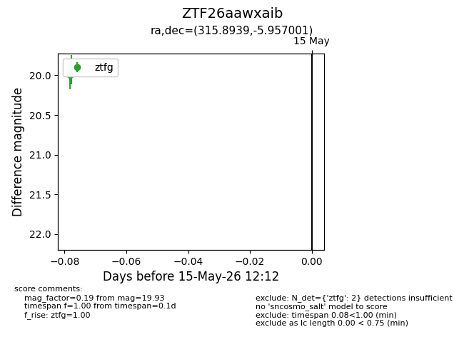
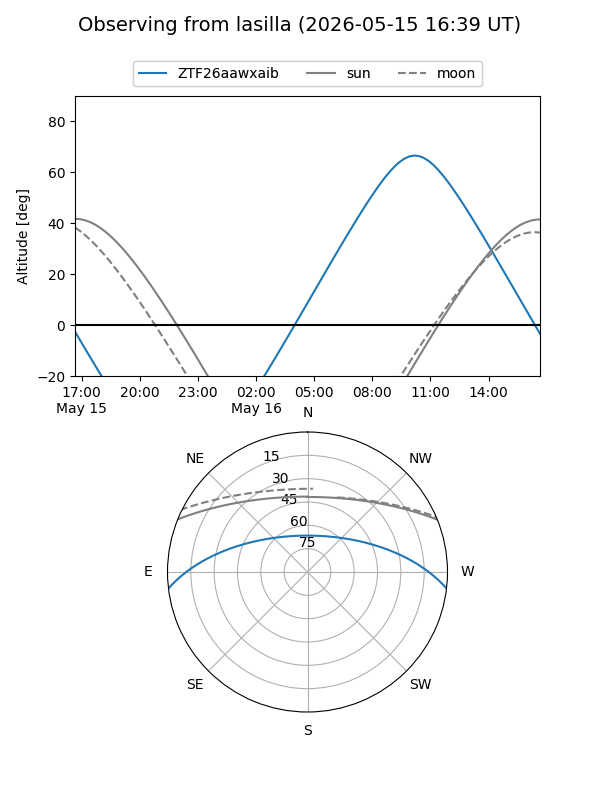
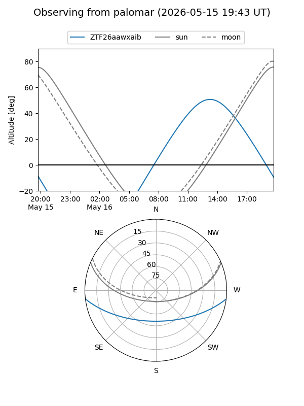

ZTF26aawxaib
Target ZTF26aawxaib at 2026-05-15 12:14
Aliases and brokers:
FINK: link
Lasair: link
ALeRCE: link
alt names
ZTF26aawxaib (ztf,fink_ztf)
Coordinates:
equatorial (ra, dec) = 315.8939,-5.95700
equatorial (HMS+DMS) = 21:03:34.54,-05:57:25.20
galactic (l, b) = (43.4539,-31.99693)
Flags:
Photometry:
last ztfg=19.93
2 ztfg detections
Lightcurve

Visibility


Additional plots